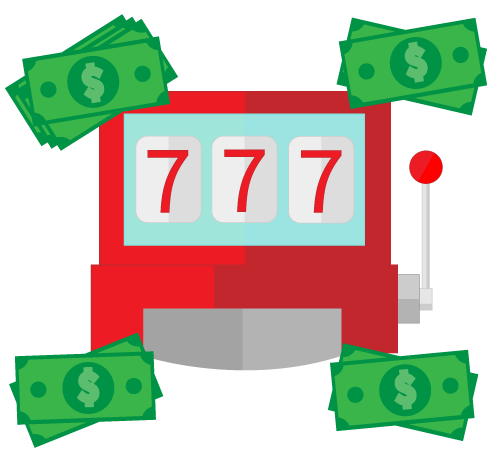

Nice to meet you. I am a Computer Science student made in Italy. What I love is play videogames, play drums and coding & math! My career goals are to contribute to Clean-Code and Open Source projects. Since 2019, I enjoy making sites and applications but now I don't do them only on my own, I am helped by my fantastic project mates. I hope I can help more than I have.

Jackpot is a Java plugin for Minecraft Spigot servers.
It can help you manage a brand-new minigame: Bank robbers! Join in a game, select a team, and get ready to defend (or to empty) the bank vault!
There are several ways to do it... But don't warry, here's a list!